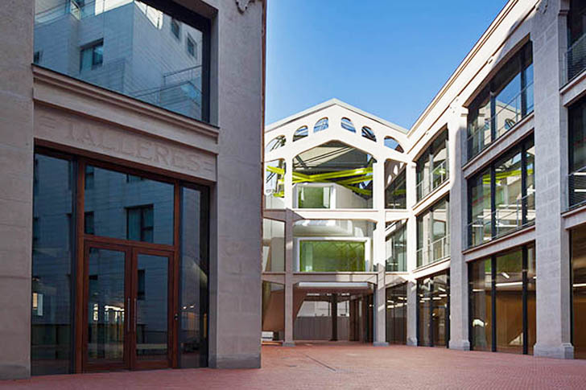

<!DOCTYPE html>
<html>
<head>
  <meta http-equiv="Content-Type" content="text/html; charset=utf-8">
  <meta name="viewport" content="initial-scale=1, maximum-scale=1,user-scalable=no"/>
  <title>VectorTileLayer sample</title>
  <link rel="stylesheet" href="https://js.arcgis.com/3.20/esri/css/esri.css">

  <link rel="stylesheet" href="//js.arcgis.com/3.20/esri/themes/calcite/esri/esri.css">
  <!-- LOAD JQUERY LIBRARY -->
  <script type="text/javascript" src="http://ajax.googleapis.com/ajax/libs/jquery/1.11.1/jquery.js"></script>
  <style>
    html,
    body,
    #map {
      z-index: 1;
      position: absolute;
      height: 100%;
      width: 100%;
      padding: 0px;
      border-width: 0px;
      margin: 0px;
      left: 0px;
      top: 0px;
    }
  </style>
  <script src="https://js.arcgis.com/3.20/"></script>
  <script>
    require([
      "esri/map",
      "esri/layers/VectorTileLayer",
      "esri/geometry/Point",
      "esri/SpatialReference",
      "esri/symbols/PictureMarkerSymbol",
      "esri/Color",
      "esri/graphic",
      "esri/InfoTemplate",
      "dojo/domReady!"
    ], function(Map, VectorTileLayer, Point, SpatialReference, PictureMarkerSymbol, Color, Graphic, InfoTemplate) {


      var map = new Map("map", {
        center: [-3.693585399999961,40.4105204], // longitude, latitude
        zoom: 16
      });

      //The URL referenced in the constructor may point to a style url JSON (as in this sample)
      //or directly to a vector tile service
      var vtlayer = new VectorTileLayer("https://www.arcgis.com/sharing/rest/content/items/95d4d6b61c0b4690adaf8cbdabb28196/resources/styles/root.json");
      map.addLayer(vtlayer);

      var point = new Point(-3.693585399999961, 40.4105204, map.spatialReference);
      var marker = new PictureMarkerSymbol();
          marker.setHeight(50);
          marker.setWidth(30);
          marker.setUrl("images/marker.png");
      var attr = {"Xcoord":-3.693585399999961,"Ycoord":40.4105204,"Plant":"Mesa Mint"};
      var infoTemplate = new InfoTemplate("MEDIALAB PRADO","<b>Dirección:</b><br> Calle de la Alameda, 15<br> 28014 Madrid <br><br> ");

      map.on('load', function() {
        map.graphics.add(new Graphic(point, marker, attr, infoTemplate));
      });

    });
  </script>
</head>
<body class="calcite">
  <div id="map"></div>
</body>

</html>
